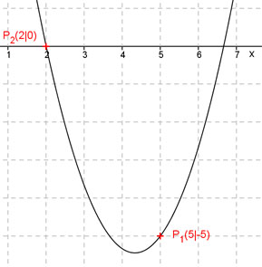

Aufgabe 48 Bestimmen Sie die quadratische Funktion der Form y = x² + bx + c, die durch die Punkte P1(5|-5) und P2(2|0) geht. Punktkoordinaten in y = x2 + bx + c einsetzen: x1 = 5 und y1 = -5 ergibt -5 = 5² + 5b + c 5 = 25 + 5b + c |-25 -30 = 5b + c (1) x2 = 2 und y2 = 0 ergibt 0 = (2)2 + 2b + c ergibt 0 = 4 + 2b + c (2) |-4 -4 = 2b + c Additionsverfahren: -30 = 5b + c | *(-1) -4 = 2b + c 30 = -5b - c -4 = 2b + c --------------- 26 = -3b |:-3 26 b = - ---- 3 In (2) eingesetzt: 26 -4 = 2 * ( - ---- ) + c 3 52 -4 = - ---- + c 3 12 52 - ---- + ---- = c 3 3 40 c = ----- 3 26 40 y = x2 - ---- x + ---- 3 3 